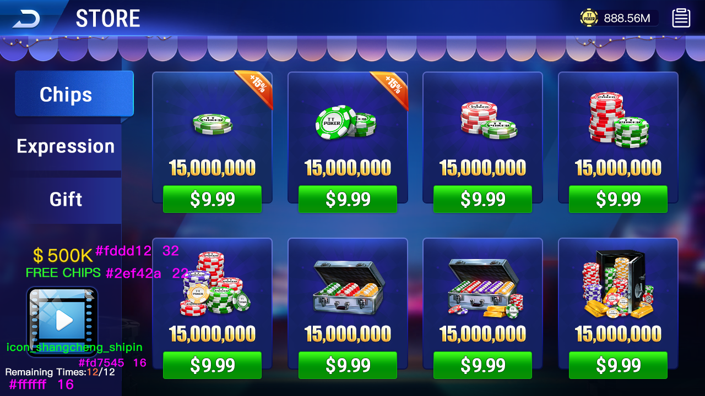

Classic poker tables
Screenshots show player seats, community-card areas, chip information, and betting controls.
C++ · POKER PROTOCOLS · PRODUCT UI
A public reference for online multiplayer poker evaluation, interface research and server-protocol analysis, mapping verifiable Unity/Lua assets, C++ user and robot callbacks, lobby, tables, SNG, MTT, seating and shop resources.
Texas Holdem source code · online poker source code · multiplayer poker · Unity · C++ · SNG · MTT

01
Screenshots show player seats, community-card areas, chip information, and betting controls.
Images and protocol resources cover single-table tournament entry and match scenarios.
Tournament message resources and screenshots document multi-table product screens.
Protocol resources cover creation, joining, membership, applications, invitations, and exits.
C++ files reference user data, robot dispatch, AI decision results, and batch time checks.
Screenshots show a lobby, dealer table, matchmaking seats, shop, and item interfaces.
02
Each player receives two private cards that only they can use directly.
Three community cards are revealed, followed by a round of player actions.
Two more community cards appear in separate rounds with additional betting.
Players select the strongest five-card hand from seven available cards.
03
All images are stored in the public repository. They demonstrate visible interfaces but do not prove that a complete client, server, or administration system is buildable.




04
AsyncUserInfoCallback.* | Asynchronous callbacks for profile and account data. |
|---|---|
AsyncAICalcResultCallback.* | Room AI decision-result callback. |
AsyncPushRobotCallback.* | Robot-dispatch callback with most handler logic currently commented out. |
BatchRobotTimer.* | Batch robot configuration and time checks with the primary timer loop commented out. |
*.proto.bytes | Login, lobby, club, tournament, game-record, and poker message resources. |
*.unity.meta | Unity scene metadata without the corresponding complete scene files. |
Public scope: the repository does not contain a complete dependency graph, build system, database schema, service entry points, or Unity scenes. Evaluate it as source fragments, protocol resources, and product-reference material rather than a deployable full platform.
05
The public files are not a complete buildable platform. Dependencies, entry points, database assets, configuration, and client projects are still required.
This page describes only verifiable callbacks and protocol resources and does not label missing implementations as a complete engine.
Screenshots prove that an interface exists. Inspect the repository files to determine whether its business logic is public.
GITHUB PROJECT
Use GitHub to review source files, commit history, and the exact public scope. Before production use, review licensing, security, compliance, and game-fairness requirements.